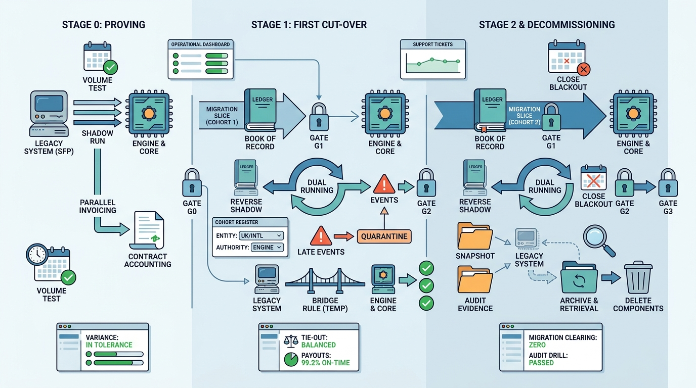

Part III — INTEGRATION: The Finance Estate as One System
Modernizing Without Stopping the Close

Image generated by Google Gemini (gemini-3-pro-image-preview)
Part III — INTEGRATION: The Finance Estate as One System

Image generated by Google Gemini (gemini-3-pro-image-preview)